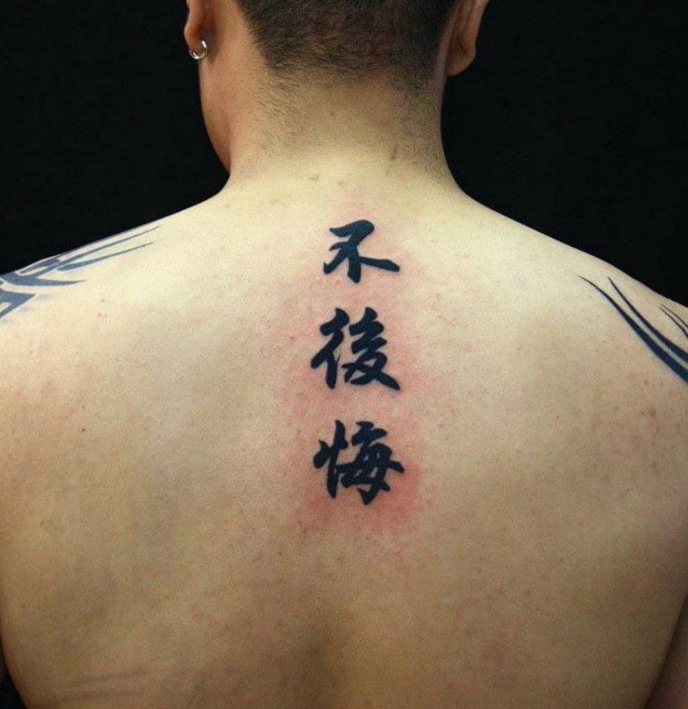
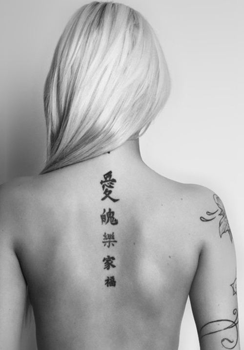
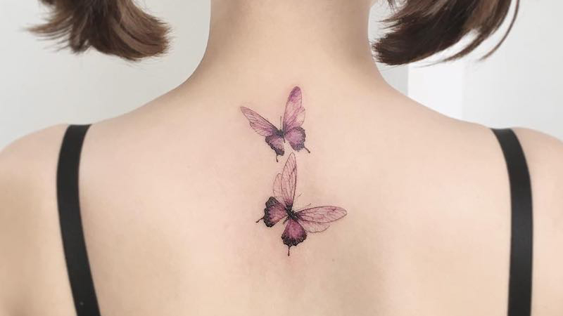
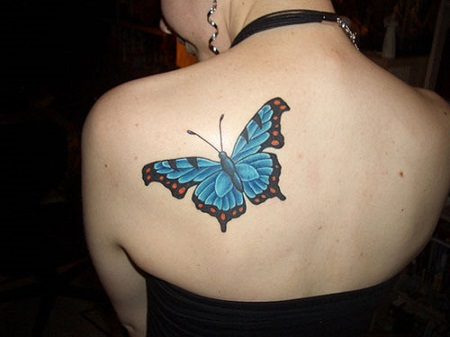
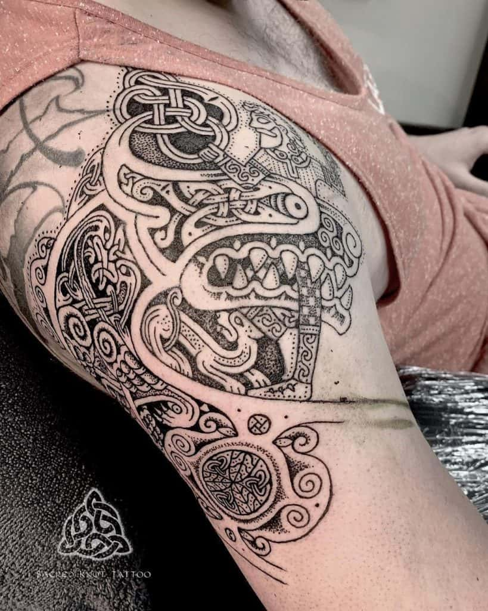

Bạn có bao giờ suy nghĩ, cơ thể bạn như một ngôi nhà và việc chăm sóc cơ thể như là việc lau dọn cả căn nhà. Như vậy việc trang trí "Ngôi nhà" ấy như là đang khiến cho người bạn trở nên "hoành tráng" hơn vậy hay có thể nói là "ngầu" hơn. Một hình xăm cố thể giúp bạn trở nên "ngầu" hơn bao giờ hết!
Giống như mỗi vẻ đẹp khác, hình xăm thể hiện sự độc đáo bằng những dấu ấn trên cơ thể. Khi xưa đã có bằng chứng cho rằng tổ tiên của chúng ta từ thời kỳ thượng cổ đã tạo ra những hình xăm lên khắp cơ thể của họ. Truyền thống đó vẫn còn tồn tại và giữ gìn cho đến ngày nay.
Theo sự phát triển dần của xã hội, hình xăm đã không còn là sự tượng trưng cho giới "giang hồ" mà nó đã trở thành một xu hướng thể hiện cái tôi nghệ thuật phổ biến và sớm được mọi người thuộc mọi chủng tộc, tín ngưỡng và giới tính chấp nhận.
Ngày nay, hình xăm có ở khắp mọi nơi, phong cách và kỹ thuật cũng đa dạng hơn bao giờ hết. Bạn có muốn xăm cho mình một hình xăm đặc biệt không? Tốt! Vậy hãy cùng BookStylist chúng tôi đi khám phá một vài phong cách xăm hình đang là xu hướng nhé. (≧▽≦)/
Kí tự tiếng Hoa là một trong những hình xăm rất được yêu thích của những tín đồ thích xăm mình. Đó có thể là một câu nói, hay một chữ cái thể hiện một ý nghĩa nào đó mà người xăm mong muốn. Tuy nhiên, nếu quyết định chọn hình xăm tiếng Hoa, hãy chắc chắn rằng bạn hoàn toàn hiểu rõ được những gì mình dự định xăm lên người. Đôi khi, nếu chỉ trông chờ vào dịch thuật trên mạng, bạn sẽ có những hình xăm với ý nghĩa “trời ơi đất hỡi” mà không hề hay biết.
Mỗi hình xăm đều chứa đựng những thông điệp, ý nghĩa mà người thực hiện muốn gửi gắm riêng. Loại hình xăm này cũng rất linh hoạt, nó xuất hiện một cách nhẹ nhàng, uyển chuyển nhưng không làm mất đi phần táo bạo. Đó là lý do tại sao không quá khó hiểu tại sao có rất nhiều người thích hình xăm chữ Trung Quốc.
Nhờ tài năng của người nghệ sĩ, những hình xăm kết hợp hài hòa giữa vẻ đẹp của nghệ thuật xăm hình hiện đại và văn hóa truyền thống. Mỗi hình xăm đều ẩn chứa những ý nghĩa riêng. Và từ đó, hình xăm chữ Trung Quốc và ý nghĩa của nó cũng được được chủ nhân chia sẻ một cách sâu sắc hơn.
 Sẽ có rất nhiều người khuyên rằng bạn nên chọn cho mình một hình xăm bươm bướm. Nếu tìm hiểu kĩ, bạn sẽ thấy đây là một hình xăm mang nhiều ý nghĩa tâm linh khá tích cực. Quan niệm xưa tin rằng, loài bướm chính là “con thuyền” để đưa những linh hồn trở về Thiên Đàng, và đưa những linh hồn từ trên trời xuống đầu thai vào mỗi kiếp người. Một hình xăm bươm bướm còn thể hiện một tình cảm sâu sắc luôn tồn tạị. Nhiều người đã chọn hình xăm này để tưởng nhớ đến một người phụ nữ đặc biệt nhất cuộc đời họ đã qua đời.
Với các nền văn hóa khác trên thế giới, hình xăm của những chú bướm cũng thể hiện nhiều ý nghĩa khác nhau, cụ thể như:
+Tại đất nước mặt trời mọc (Nhật Bản), hình xăm của những chú bướm thể hiện được sự nữ tính, dịu dàng của người phụ nữ, sở hữu hình xăm bướm sẽ khiến các bạn nữ ở Nhật trở nên quyến rũ hơn.
+Tại Trung Quốc, nếu bạn xem qua Lương Sơn Bá – Chúc Anh Đài thì bạn chắc không thể quên được hình ảnh 2 chú bướm trong đó. 2 người sau khi chết đã hóa thành 2 con bướm để mãi mãi bên nhau. Vì vậy hình xăm bướm với văn hóa Trung Quốc thể hiện về sự may mắn, cũng như tình yêu đôi lứa.
+với người Celtic (Một thành phố tại Scotland) thì bướm lại thể hiện cho tình yêu và sự danh dự. Đó cũng là biểu tưởng cho những bộ lạc tại đây.
Dù mang thuộc nền văn hóa nào đi nữa thì hình xăm bướm cũng thể hiện một sự may mắn, đề cao về nét đẹp. Vì vậy, rất nhiều người muốn được sở hữu hình xăm này.
 Lộng lẫy và thần bí – rất nhiều dạng thập giá Celtic đã được chọn vào danh sách những hình xăm chất lừ để người xăm có thể lựa chọn. Hình xăm này cơ bản là một ký tự tôn giáo, được sử dụng để tôn vinh di sản của một tộc người, với các vòng tròn kết nối ở bốn góc, cùng những đường cong không thể phá vỡ; và các họa tiết trang trí còn mang ý nghĩa tượng trưng cho sự vĩnh viễn. Bản thân hình thập tự giá cũng đã là biểu tượng cho sự kết hợp của bốn yếu tố căn bản (không khí, nước, lửa và đất), tượng trưng cho “sức mạnh” và “sự cân bằng”.
Hình xăm Celtic nằm trong nhóm những hình xăm được thiết kế cầu kỳ và phức tạp nhất. Kiểu hình xăm phổ biến này bao gồm những nút thắt, họa tiết tribal và những xoáy cuộn hòa quyện vào nhau.
Hình xăm Celtic là một cách tuyệt vời để bạn thể hiện dòng dõi Celts trong máu thịt hoặc đơn giản là bạn chỉ muốn mang trên người 1 hình xăm đẹp đẽ và quyến rũ. Những thiết kế Celtic này có thể được biến đổi để kết hợp với những hoa văn khác như Thánh giá, bươm bướm, những sinh vật huyền thoại và nhiều nhiều nữa. Chữ thập Celtic thể hiện bốn phương trong trời đất và tượng trưng cho sự đan xen giữa những con đường ta chọn trong cuộc đời.
Điều tuyệt vời nhất của hình xăm Celtic là dù nam hay nữ xăm cũng đều đẹp và chúng rất dễ tùy biến theo ý thích của từng người.
Vài lưu ý nhỏ trước khi bạn xăm mình nhé:Hãy chắc rằng bạn có sự đồng ý của cha mẹ hay người giám hộ nếu dưới 18, hãy biết chọn người xăm uy tín và chuyên gia về loại xăm bạn muốn, không nên tham rẻ mà tìm người người xăm thiếu chuyên nghiệp